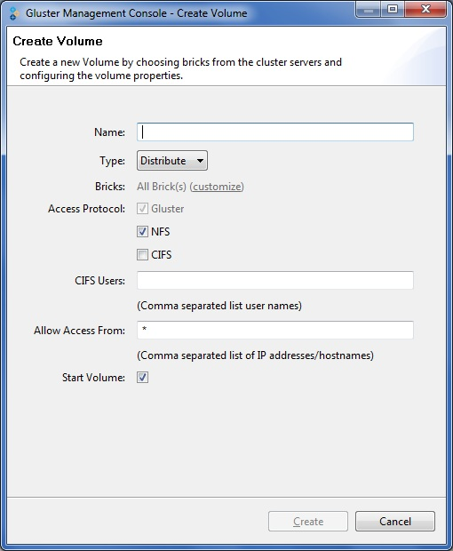

The Create Volume window is displayed.

You need to use user-based authentication for CIFS exports, hence you must specify the user’s who can access the volume as a comma-separated list in the Users field.
For more information about configuring CIFS, refer CIFS Services.
You can use wildcards to specify ranges of addresses. Typing an asterisk (*) specifies all IP addresses or hostnames. You need to use IP-based authentication for Gluster Filesystem and NFS exports.